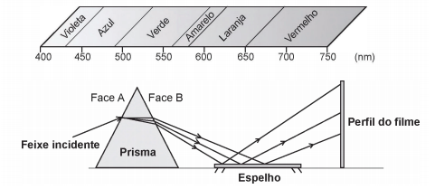
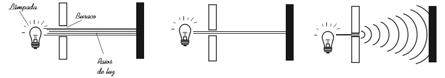
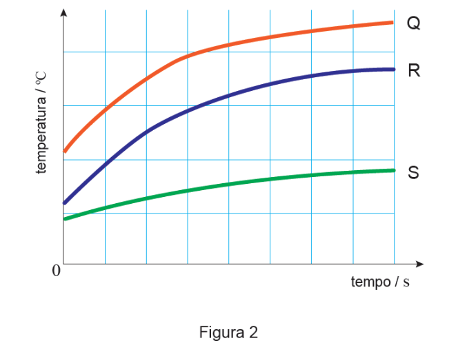

I – Quando um avião está voando nas vizinhanças de uma casa, algumas vezes a imagem da TV sofre pequenos tremores e fica ligeiramente fora de foco.
II – Uma criança faz bolhas de sabão com auxílio de um canudinho, soprando água na qual se mistura um pouco de sabão. Quando a bolha está crescendo, observa-se uma mudança de cor da película da bolha.
III – Uma pessoa escuta o som que vem de trás do muro.
IV – Uma piscina cheia de água parece mais rasa quando observada de fora.
V – Uma pessoa vê sua imagem na superfície de um lago.
Assinale a sequência que indica corretamente os conceitos físicos utilizados para explicar cada uma das cinco situações.
a) I - Interferência, II - difração, III - difração, IV - interferência, V – difração.
b) I - Difração, II - interferência, III - reflexão, IV - refração, V – refração.
c) I - Difração, II - difração, III - interferência, IV - refração, V – reflexão.
d) I - Reflexão, II - refração, III - reflexão, IV - refração, V – reflexão.
e) I - Interferência, II - interferência, III - difração, IV - refração, V – reflexão.
I. Na reflexão, o raio incidente e o raio refletido estão contidos no mesmo plano que a reta normal, portanto são congruentes.
II. Quando a luz incide numa fronteira separadora de dois meios, pode sofrer reflexão, absorção e refração.
III. Ao observarmos uma pessoa através de um espelho plano, também seremos vistos por ela. Este fenômeno é descrito pelo Princípio da Independência dos Raios Luminosos.
IV. A faixa de frequência de ondas capaz de sensibilizar o olho humano é denominada de espectro visível.
V. Podemos considerar que a “sombra” de uma nuvem projetada sobre o solo é do mesmo tamanho da própria nuvem, devido aos raios solares serem aproximadamente paralelos.
É CORRETO afirmar que
|
a) apenas II, IV e V são verdadeiras. b) apenas II e III são verdadeiras. c) apenas III e V são verdadeiras. |
d) apenas I, II, III e VI são verdadeiras. e) apenas III e IV são verdadeiras. |
a) a luz no interior da fibra viola os princípios da ótica geométrica.
b) a luz percorre trajetórias retilíneas no interior da fibra, sofrendo múltiplas reflexões na superfície da fibra até a saída.
c) a luz no interior da fibra somente se propaga se a fibra estiver disposta em linha reta.
d) a luz sofre refrações múltiplas durante sua propagação, havendo apenas uma reflexão total na saída da fibra.

Observando os pontos luminosos revelados no flime, de baixo para cima, constatam-se as seguintes cores:
|
a) Vermelha, verde, azul. b) Verde, vermelha, azul. |
c) Azul, verde, vermelha. d) Verde, azul, vermelha. |
e) Azul, vermelha, verde. |
|
a) difração. b) refração. |
c) polarização. d) interferência. |
e) ressonância. |

Em qual das situações a seguir está representado o fenômeno descrito no texto?
a) Ao se esconder atrás de um muro, um menino ouve a conversa de seus colegas.
b) Ao gritar diante de um desfiladeiro, uma pessoa ouve a repetição do seu próprio grito.
c) Ao encostar o ouvido no chão, um homem percebe o som de uma locomotiva antes de ouvi-lo pelo ar.
d) Ao ouvir uma ambulância se aproximando, uma pessoa percebe o som mais agudo do que quando aquela se afasta.
e) Ao emitir uma nota musical muito aguda, uma cantora de ópera faz com que uma taça de cristal se despedace.
Levando em conta que a imagem de um objeto fica desfocada na fotografia quando a lente da máquina fotográfica não consegue formar sua imagem exatamente na posição do filme/sensor fotográfico, uma explicação física para o efeito de desfocagem descrito é que
a) a refração da luz, ao atravessar a camada de vidro do espelho, provoca um desvio na direção da luz refletida, dificultando sua projeção na posição correta.
b) a imagem da pessoa, por se tratar de um espelho plano, é do tipo virtual e, por isso, não pode ser projetada no filme/sensor fotográfico.
c) a reflexão da luz em espelhos planos ocorre na sua maior parte de maneira difusa, dificultando a formação da imagem em um ponto preciso.
d) boa parte da luz, durante a reflexão no espelho, é absorvida por ele, dificultando o mecanismo de focalização da máquina fotográfica.
e) a máquina fotográfica regula o foco no plano do espelho, sendo que a imagem da pessoa é formada atrás do espelho.
Considerando-se as informações do texto, o fator que possibilita essa diferença entre propagação das ondas de rádio e as de micro-ondas é que as ondas de rádio são
a) facilmente absorvidas na camada da atmosfera superior conhecida como ionosfera.
b) capazes de contornar uma diversidade de obstáculos como árvores, edifícios e pequenas elevações.
c) mais refratadas pela atmosfera terrestre, que apresenta maior índice de refração para as ondas de rádio.
d) menos atenuadas por interferência, pois o número de aparelhos que utilizam ondas de rádio é menor.
e) constituídas por pequenos comprimentos de onda que lhes conferem um alto poder de penetração em materiais de baixa densidade.
Considerando a situação apresentada, a rádio pirata interfere no sinal da rádio do centro devido à
a) atenuação promovida pelo ar nas radiações emitidas.
b) maior amplitude da radiação emitida pela estação do centro.
c) diferença de intensidade entre as fontes emissoras de ondas.
d) menor potência de transmissão das ondas da emissora pirata.
e) semelhança dos comprimentos de onda das radiações emitidas.
|
a) A altura da onda sonora. b) A amplitude da onda sonora. |
c) A frequência da onda sonora. d) A velocidade da onda sonora. |
e) O timbre da onda sonora. |
|
a) Difração. b) Reflexão. |
c) Refração. d) Atenuação. |
e) Interferência. |
Quais são as características do sinal gerado pelo circuito desse tipo de fone de ouvido?
a) Sinal com mesma amplitude, mesma frequência e diferença de fase igual a 90° em relação ao sinal externo.
b) Sinal com mesma amplitude, mesma frequência e diferença de fase igual a 180° em relação ao sinal externo.
c) Sinal com mesma amplitude, mesma frequência e diferença de fase igual a 45° em relação ao sinal externo.
d) Sinal de amplitude maior, mesma frequência e diferença de fase igual a 90° em relação ao sinal externo.
e) Sinal com mesma amplitude, mesma frequência e mesma fase do sinal externo.
|
a) difusão. b) mutação. |
c) absorção. d) refração. |
a) aumenta a parcela de luz refletida pela vidraça.
b) não há luz refletida pela vidraça.
c) diminui a parcela de luz refratada, proveniente do exterior.
d) aumenta a parcela de luz absorvida pela vidraça.
Sobre esse fenômeno, é totalmente CORRETO afirmar que
a) a separação das ondas luminosas com diferentes frequências se deve à variação de temperatura nas gotículas de água.
b) a separação das ondas luminosas com diferentes frequências se deve à forma das gotículas de água.
c) a separação das ondas luminosas com diferentes frequências se deve à variação das frequências dessas ondas nas gotículas de água.
d) a separação das ondas luminosas com diferentes frequências se deve à variação de velocidade dessas ondas nas gotículas de água.
e) a separação das ondas luminosas com diferentes frequências se deve à presença de impurezas nas gotículas de água.
a) eletromagnéticas, de comprimentos de onda bem diferentes, e audíveis.
b) eletromagnéticas, de frequências bem afastadas, e visíveis.
c) mecânicas, de comprimentos de onda idênticos, e audíveis.
d) mecânicas, de frequências bem próximas, e estejam na faixa audível.
e) de amplitudes ligeiramente diferentes, podendo ser de qualquer natureza.
|
a) 3,9°. b) 4,4°. |
c) 5,0°. d) 6,2°. |
e) 7,6°. |
As latas, devidamente fechadas com uma rolha atravessada por um termómetro, foram colocadas à mesma distância de uma lâmpada de 100W. Acendeu-se a lâmpada e mediu-se, para cada uma das latas, a temperatura da água nelas contida ao longo de um determinado intervalo de tempo.
A Figura 2 apresenta os esboços dos gráficos traçados a partir dos valores experimentais de temperatura em função do tempo, obtidos na experiência descrita.

19.1. Conclua, justificando, qual das latas terá uma superfície mais refletora.
19.2. A partir de um determinado instante, a temperatura da água contida na lata S manteve-se aproximadamente constante, o que significa que
(A) as taxas temporais de emissão e de reflexão de energia da lata são iguais.
(B) a lata deixou de absorver energia do exterior.
(C) as taxas temporais de emissão e de absorção de energia da lata são iguais.
(D) a lata deixou de emitir energia para o exterior.